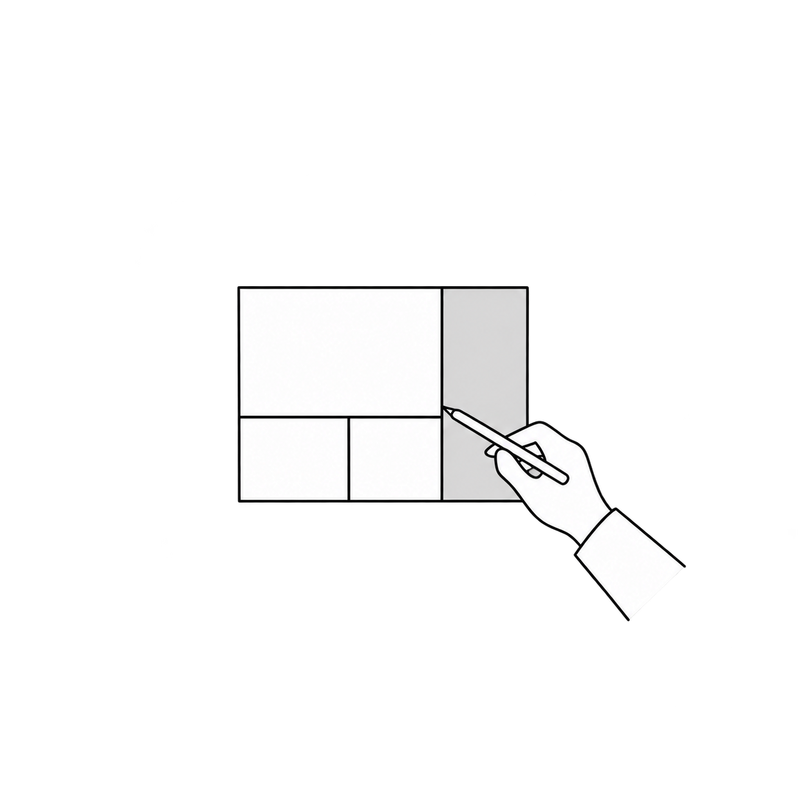
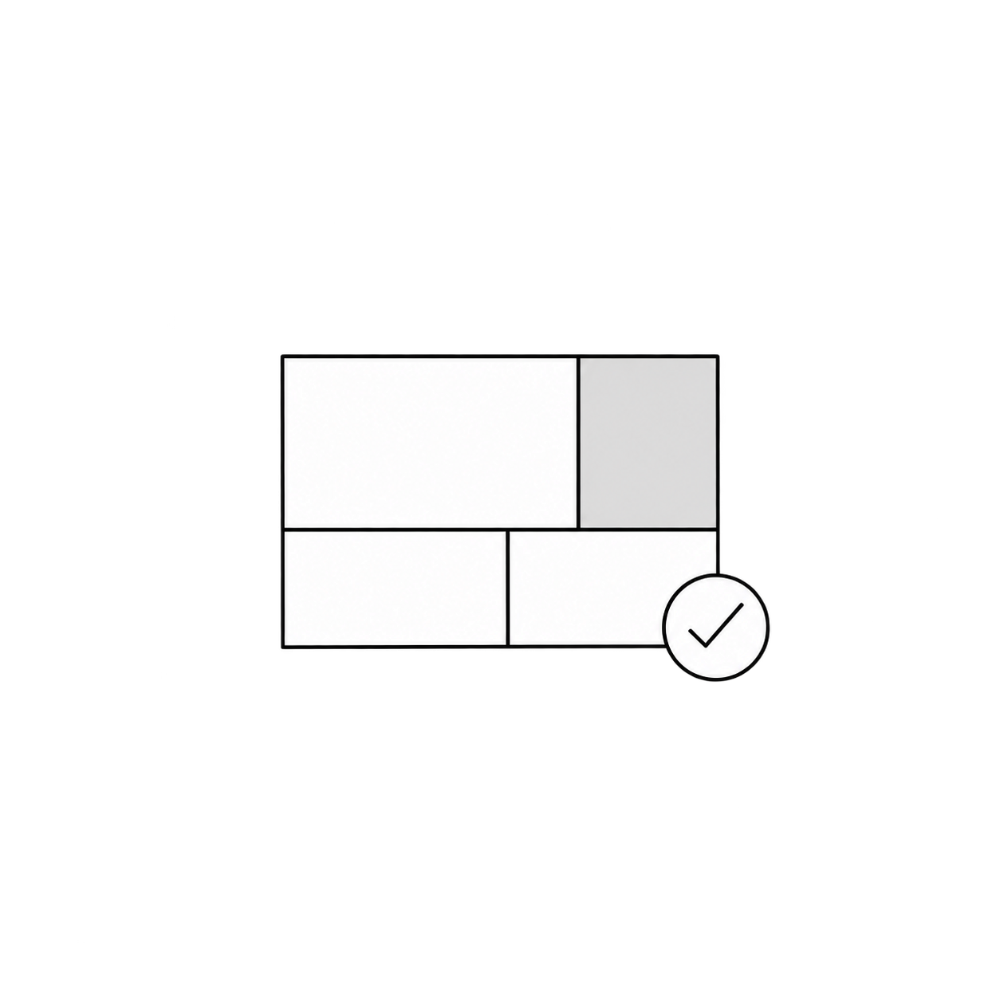
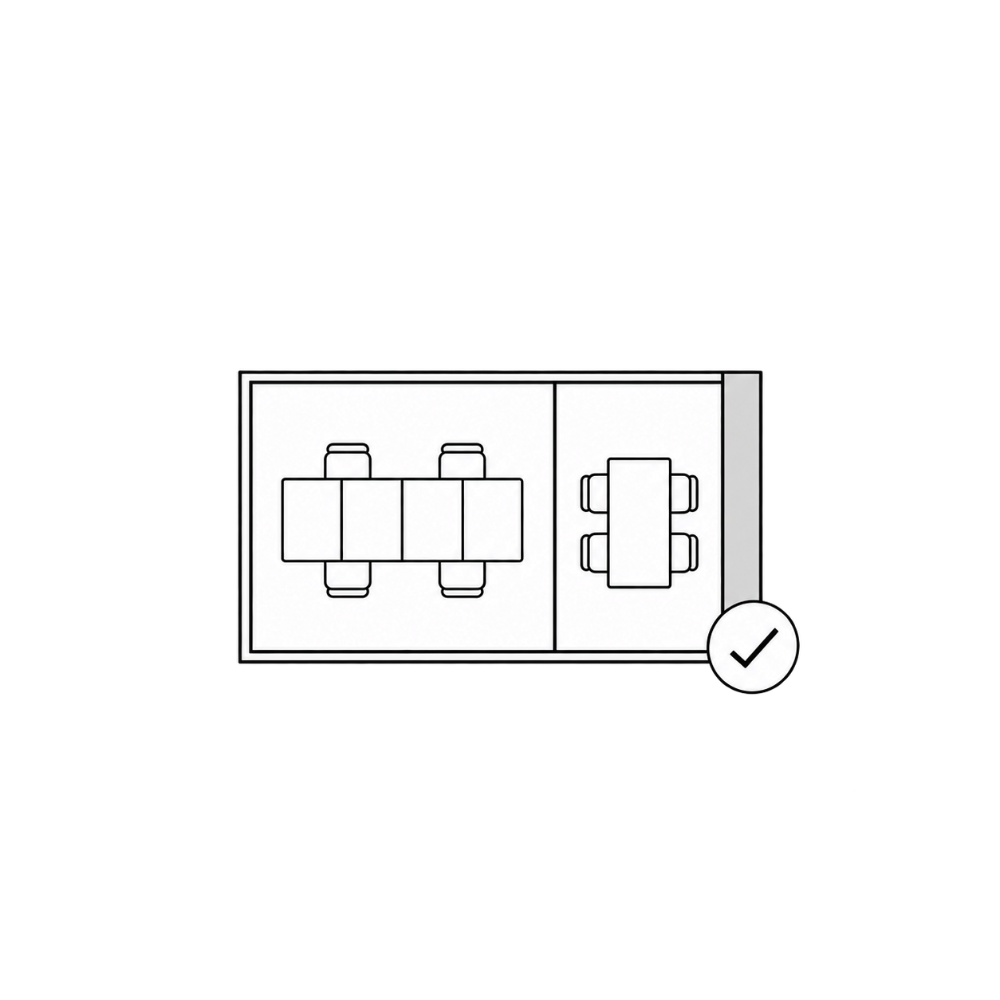
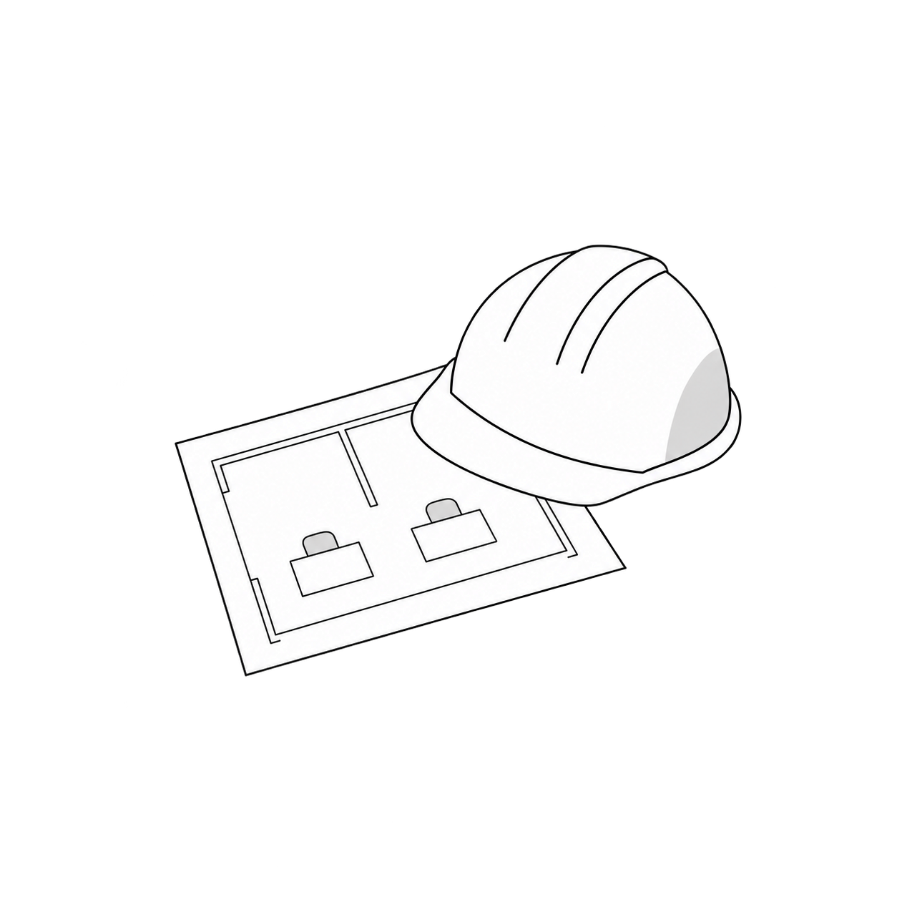
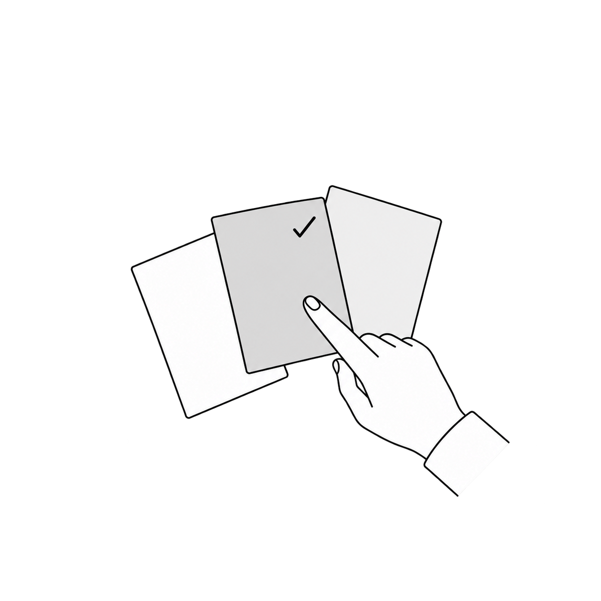
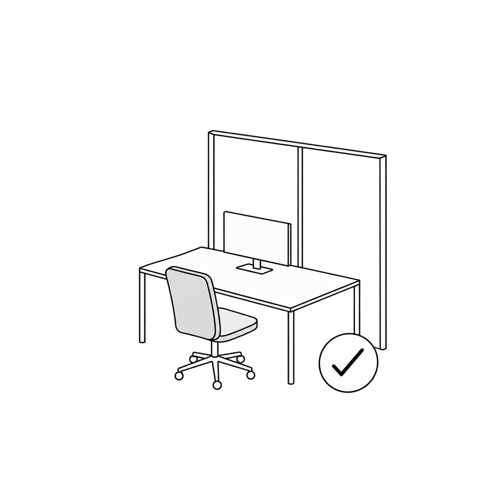

Before Contract
계약 전 단계
상담과 제안을 통해 프로젝트의 기준을 함께 정합니다.
01
현장 미팅
- 미팅 전 체크리스트 접수 및 고객 단톡방 개설
- 미팅 후 예상 업무 일정과 공사 기간 안내
- 상담 및 현장 실측
02

03
디자인 제안 및 견적 미팅
- 3D 투시도 또는 이미지 스킴을 포함한 디자인 제안서와 견적 안내
Before Construction
계약 후 / 착공 전 단계
공사에 필요한 결정과 일정을 순서대로 확정합니다.
04
계약
- 전자 계약 및 결제 조건 확인 (PC / 모바일)
- 공사 기간 확정
- 계약금 10%, 선급금 30%, 중도금 40%, 잔금 20%
- 세금계산서는 잔금 후 1장으로 발행
05

06

Construction
착공 후 단계
현장 시공과 세부 확인을 거쳐 공간을 완성합니다.
07

착공
- 착공 전 공사 준비 및 협의
- 최종 설계 내용 기반 착공
08

세부 컨펌
- 마감재, 제작 가구, 사인 컨펌
- 사무 및 구매 가구 컨펌
09

준공
- 최종 검수 및 인수인계
- 준공 사진 촬영
- 잔금 정산 및 A/S 안내